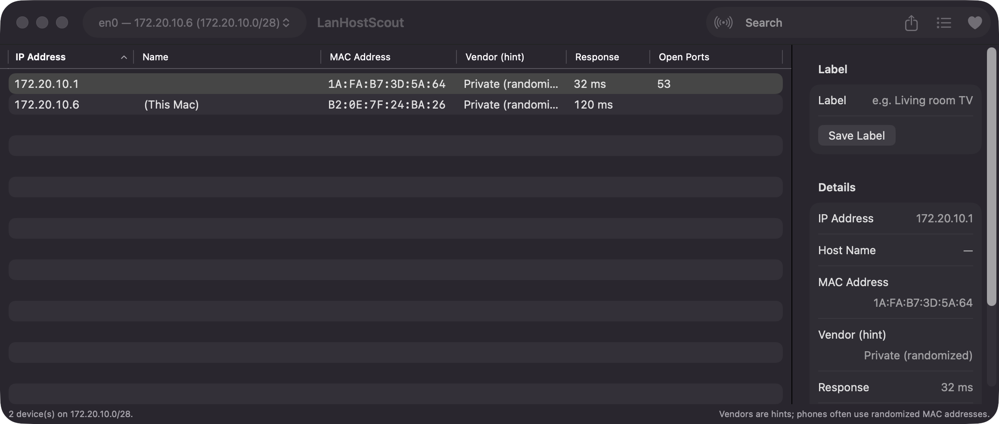
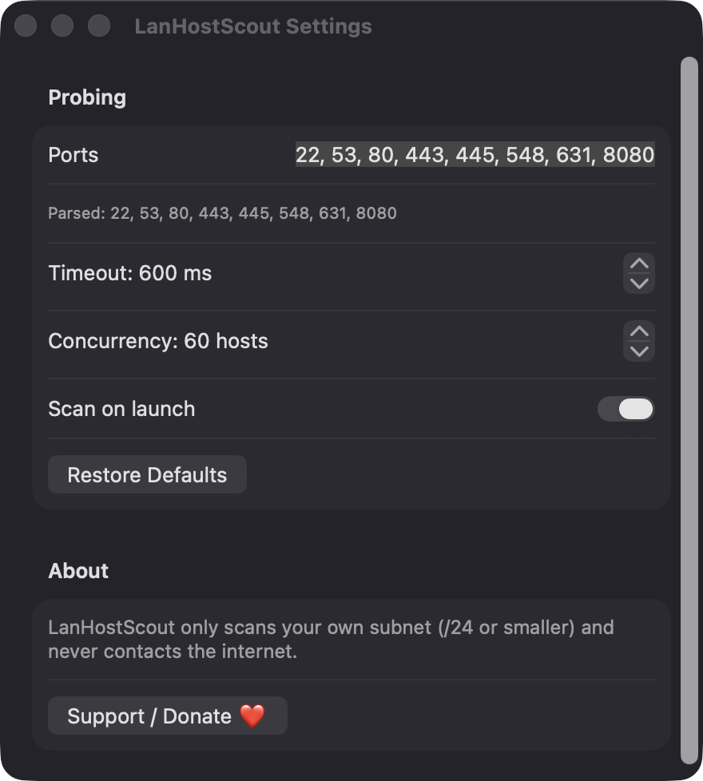
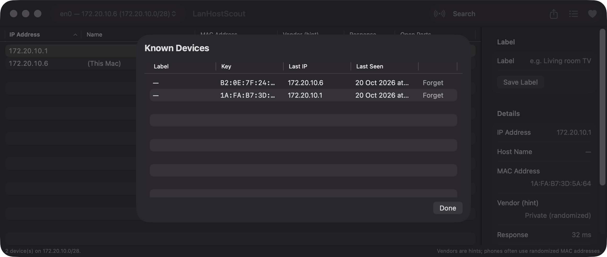

Fast bounded subnet sweep
Probes every address in a /24 or smaller range with up to 60 concurrent TCP connections by default. A connection or a refusal both count as a sign of life.
Open source · macOS 14+ · Universal binary · Developer & Network
LanHostScout scans your local subnet and lists each device with its IP, name, MAC address, vendor hint and open ports. Pick an interface, press Scan or ⌘R, and export the results to CSV.
Free & MIT licensed · Apple Silicon & Intel · Latest release

Features
One native window that merges probes, the ARP cache and Bonjour into a single sortable table.
Probes every address in a /24 or smaller range with up to 60 concurrent TCP connections by default. A connection or a refusal both count as a sign of life.
Combines TCP probes, the system ARP cache and Bonjour service discovery, so devices that block probes can still appear.
See IP, name, MAC, vendor hint, response time and open ports. Search across all columns and inspect any device in the sidebar.
Give devices a label and spot newcomers: anything not seen in an earlier scan is tagged NEW. Review or forget known devices at any time.
Edit the port list, set the timeout from 100 to 5000 ms, adjust concurrency, and choose whether to scan on launch.
Copy a row with ⌘C or export all rows or a selection to CSV with ⌘E.
Screenshots


Install
LanHostScout is open source and not notarized with a paid Apple Developer ID, so macOS needs one extra step the first time.
xattr -cr /Applications/LanHostScout.app
Download
Free, forever. Built for macOS 14 Sonoma or newer, Apple Silicon and Intel.
Not notarized: on first launch right-click LanHostScout.app → Open.
FAQ
Yes. It is released under the MIT license and the full source is on GitHub. It has no ads, no analytics and no third-party dependencies, only Apple frameworks. If it is useful, there is an optional Support button.
Only Local Network access, which it uses to probe addresses on your subnet and browse Bonjour services. It does not request Accessibility, Screen Recording, microphone, camera or contacts, and the ARP cache is read without admin rights.
Everything stays on your Mac. Device labels and known devices are saved as JSON at ~/Library/Application Support/LanHostScout/known-devices.json. Nothing is sent to a server.
Notarization requires a paid Apple Developer account, and this is a free project. Right-click the app and choose Open once to get past Gatekeeper, or build it yourself from source with Xcode.
Yes. LanHostScout was generated by Claude Code from a written spec as a clean-room reimplementation, with no code or assets from any commercial app. The full source is on GitHub under MIT, so you can read every line before you run it. It has had less human review than a hand-written app, so bug reports are welcome.
Support ❤️
LanHostScout is a free, open-source alternative to paid utilities. If it earns a spot on your Mac, a coffee keeps the updates coming.
☕ Support Or on Ko-fi